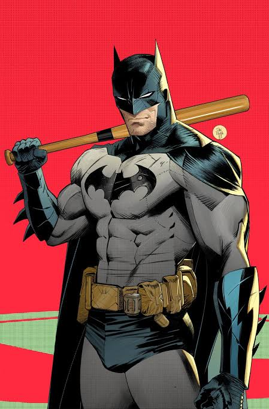
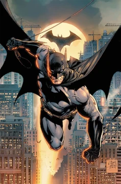

Quem é o Batman?
Batman (Bruce wayne) é um personagem da DC Comics que atua como justiceiro de Gotham.Ele não tem
sperpoderes: sua força está em treinamento,
inteligência e recursos (ou seja,rico).
Nas Histórias, Gotham costuma representar problemas sociais reais: desigualdade, orrupção e violência
urbana. Muitos quadrinhos usam o Btman como
forma de
Crítica social, mostrando como decisões políticas, interesses econômicos, falhas nas
insituições e o autoritarismo afetam o cotidiano das pessoas,
especialmente nas periferias.
Galeria


